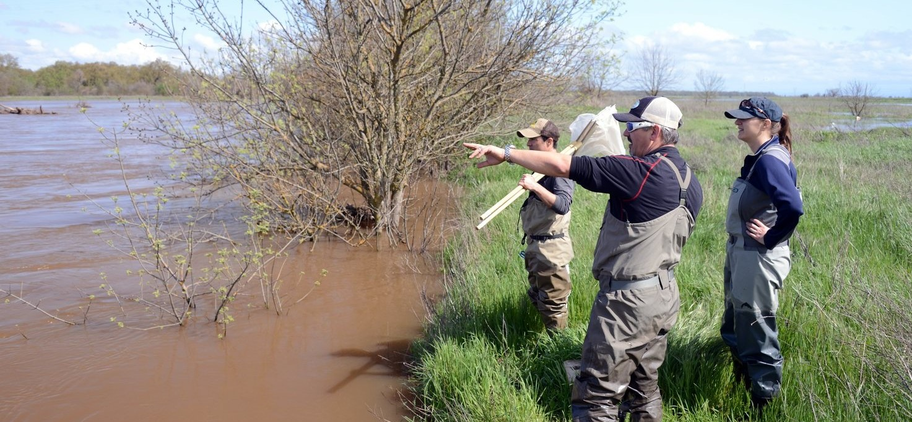

Meet the GABS Awardees, How Satellite Data Can
Inform Water Policy
June 11, 2020
In a recent issue of Resources magazine, RFF Fellow and VALUABLES Director Yusuke Kuwayama highlights the opportunities and challenges associated with adopting satellite data for water management in the United States. Remotely sensed data have been used in many ways to help inform consequential decisions— notable examples include monitoring drought to mitigate its economic impacts and detecting harmful algal blooms to prevent people and pets from getting sick. But it has not yet been widely adopted at an operational level. That’s where social scientists can help, Kuwayama says. “[Social scientists with expertise in water resources] generally understand how hydrologic information influences water management decisions and how these decisions influence socioeconomically meaningful outcomes.”
Valuables is delighted to announce the winners of three grants to support research that quantifies the benefits of using satellite data in decisions that improve socioeconomic benefits for people and/or the environment.
The three winning teams are led by Sonia Aziz (Moravian College), Jill Caviglia-Harris (Salisbury University), and Stephen Newbold (University of Wyoming) with transdisciplinary personnel drawn from 11 more academic institutions and organizations. The teams will conduct impact assessments that quantify the societal benefits of using Earth observations in health, ecosystem, and water quality applications.
Stephen Newbold (University of Wyoming) leads the development of a model that describes how lake visitors in California adjust their recreation choices when outbreaks of harmful algal blooms are announced. This will improve our current understanding of how early warning systems supported by satellite data allow recreators to divert their visits away from water bodies currently experiencing a bloom, and instead visit un-impacted sites, thereby increasing the overall enjoyment of water-based recreation activities, reducing the risks of adverse health effects, and mitigating the regional economic impacts associated with lost visitation days. The project team includes Sarah Lindley and Shannon Albeke (University of Wyoming), Joshua Viers (University of California, Merced), Robert Johnston (Clark University), and George Parsons (University of Delaware).
Learn more by watching video interviews with the principal investigators, browsing the project summaries, and exploring how the teams have designed their impact assessments by checking out their VALUABLES impact assessment framework graphics.
